2015-09-08 - Nº 19
Editorial
Aqui está a Newsletter Nº 19 no seu formato habitual.
Esta Newsletter encontra-se mais uma vez disponível no sistema documenta do altLab. Todas as Newsletters encontram-se indexadas no link.
Esta Newsletter tem os seguintes tópicos:
Esta semana decorre a IFA 2015. Trata-se de uma das maiores exposição de produtos electrónicos de consumo. Nesta exposição, entre outros anúncios, a Intel apresentou a nova geração de Processadores com melhorias ao nível do consumo energético e disponibilização de novos tipos de dispositivos. A IBM anunciou um colaboração com a ARM para a expansão da sua plataforma de IoT - a IBM IoT Foundations. Um investigador demonstrou que os sistemas de condução autónoma baseados em sensores do tipo LiDAR estão vulneráveis a ataques que permitem a criação de obstáculos fantasmas e complicar as decisões da condução autónoma dos mesmos carros. Nesta Newsletter iremos apresentar um circuito que permite concentrar um grande numero de entradas usando poucos pinos. O projeto de maker é uma estação meteorológica ligada por Bluetooth.
 João Alves ([email protected])
João Alves ([email protected])
O conteúdo da Newsletter encontra-se sob a licença  Creative Commons Attribution-NonCommercial-ShareAlike 4.0 International License.
Creative Commons Attribution-NonCommercial-ShareAlike 4.0 International License.
Novidades da Semana ^
Introducing 6th Generation Intel® Core™, Intel's Best Processor Ever
"Today Intel Corporation introduced the 6th Generation Intel® Core™ processor family, the company's best processors ever. The launch marks a turning point in people's relationship with computers. The 6th Gen Intel Core processors deliver enhanced performance and new immersive experiences at the lowest power levels ever and also support the broadest range of device designs – from the ultra-mobile compute stick, to 2 in 1s and huge high-definition All-in-One desktops, to new mobile workstations."
IBM and ARM Collaborate to Accelerate Delivery of Internet of Things
"IBM today announced an expansion of its Internet of Things (IoT) platform – called IBM IoT Foundation - through an integration with ARM, providing out of the box connectivity with ARM® mbedTM-enabled devices to analytics services. This fusion will allow huge quantities of data from devices such as industrial appliances, weather sensors and wearable monitoring devices to be gathered, analyzed and acted upon. IBM also announced the first in a series of IBM Cloud-based, industry-specific IoT services with IoT for Electronics. The service will enable electronics manufacturers to gather data from individual sensors that can be combined with other data for real-time analysis."
Researcher Hacks Self-driving Car Sensors
"The multi-thousand-dollar laser ranging (lidar) systems that most self-driving cars rely on to sense obstacles can be hacked by a setup costing just $60, according to a security researcher. “I can take echoes of a fake car and put them at any location I want,” says Jonathan Petit, Principal Scientist at Security Innovation, a software security company. “And I can do the same with a pedestrian or a wall.” Using such a system, attackers could trick a self-driving car into thinking something is directly ahead of it, thus forcing it to slow down. Or they could overwhelm it with so many spurious signals that the car would not move at all for fear of hitting phantom obstacles."
Ciência e Tecnologia ^
Translucent Li-ion Battery Charges Itself by Using Sunlight
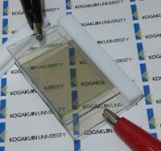
"A Japanese research group prototyped a translucent lithium-ion (Li-ion) rechargeable battery that can charge itself by using sunlight. With the battery, the group aims to realize a "smart window," which is an almost transparent window that functions both as a large-area rechargeable battery and as a photovoltaic cell (when the window receives sunlight, it is pigmented, lowering light transmittance)."
Microscopic fish are 3-D-printed to do more than swim
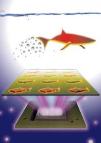
"Nanoengineers at the University of California, San Diego used an innovative 3-D printing technology they developed to manufacture multipurpose fish-shaped microrobots -- called microfish -- that swim around efficiently in liquids, are chemically powered by hydrogen peroxide and magnetically controlled. These proof-of-concept synthetic microfish will inspire a new generation of 'smart' microrobots that have diverse capabilities such as detoxification, sensing and directed drug delivery, researchers said."
How Two Ex-Amazon Engineers Invented a New Type of Customizable Force Interface
"It feels like a wave of pressure-sensitive tactile interfaces has been about to crest for years. But a pair of engineers believe they’ve built the hardware and software that could delivers on that promise—and they’ve funded the first round of production in just a couple of hours. It’s called Sensel Morph , and the two inventors behind it think it could replace the way we interact with our devices today. “We’re trying to replace the archaic keyboard and mouse with an interface that captures the nuance and expression our hands are capable of,” says Ilya Rosenberg in the pitch video. Rosenberg and his partner, Aaron Zarraga, met while working as engineers at Amazon. Rosenberg left the company to finish up a PhD, and later reconnected with Zarraga while showing off a prototype of the force-sensitive interface."
Cursos MOOC ^
- Mechanical Behavior of Materials, Part 1: Linear Elastic Behavior - Começa a 9 de Setembro.
- Technology Entrepreneurship - Começa a 16 de Setembro.
- Begin Robotics - Começa a 21 de Setembro.
- Cryptography II - Começa a 19 de Outubro.
Modelos 3D ^
Com a disponibilidade de ferramentas que permitem dar azo a nossa imaginação na criação de peças 3D e espaços como o thingiverse para as publicar, esta rubrica apresenta alguns modelos selecionados que poderão ser úteis.
Customizable Case (Rectangular) (http://www.thingiverse.com/thing:384919)
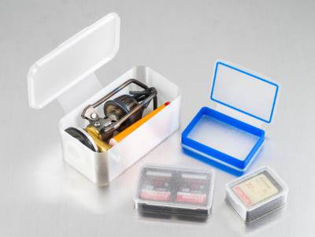
Rectangular case generator. The inset lid is held in place with friction so using thicker layers can help to keep the case closed (I'm using 200 micron layers).
The hinge flexes so flexible plastics will work better for this design (I'm using MadeSolid PET+), but less flexible materials may also work (I haven't tried ABS or PLA, but making the hinge longer or thinner may help).
cross tweezer (http://www.thingiverse.com/thing:25587)
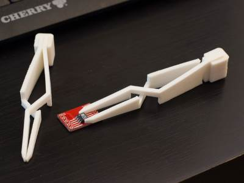
simple cross tweezers. Useful for soldering delicate parts, holding wires etc.
tough-version can be used when more force is required, normal version (less spring force) when handling delicate objects.
PCB-AssemblingFormerPlate (http://www.thingiverse.com/thing:168412)
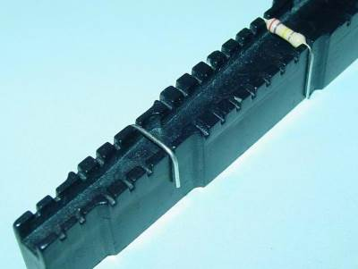
Circuitos ^
Aqui é apresentado um circuito simples que poderá ser construído com componentes.
Múltiplas entradas - Paralelo para Série
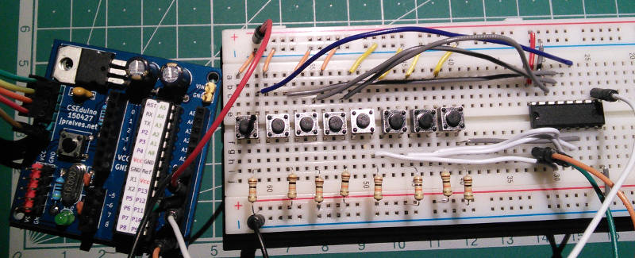
Hoje iremos construir um circuito para ler múltiplos inputs (botões ou outros) usando um IC que converte um input paralelo num output série.
O Circuito usa um IC 74HC165 para fazer a leitura dos inputs. São usadas resistências de pull-up em todos os inputs para que seja garantido um estado fixo quando o botão não está premido.
Este circuito pode ser extendido para mais inputs usando mais integrados destes em cascata. O pino 1 (/PL) e 2 (CP) são ligados em paralelo em todos os 74HC165. O pino 10 (DS) do primeiro IC deve ser ligado ao pino 9 (Q7) do segundo e por ai em diante. O pino 15 (/CE) foi ligado a GND o que significa que o IC encontra-se sempre enabled. O pino 10 (/Q7) é o complemento do pino 9 (Q7).
É necessário garantir que todos os pinos P0-P7 têm um estado conhecido. Devem ser ligados ao GND ou aos 5V (através de um pull_up) todos os pinos que não são usados.
Esquemático
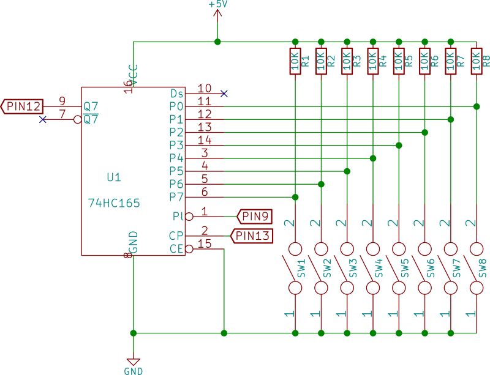
Nota:
Os circuitos apenas apresentam a parte relevante para o IC 74HC165. A ligação com o micro-controlador está definida no sketch. O circuito para o CSEduino pode ser consultado no Artigo do Maker da Newsletter Nº5. Pode igualmente ser usado um Arduino UNO.
Componentes (BOM):
Circuito:
- 1x IC 74HC165 (U1)
- 8x Resistência de 10K Ohms (R1-R8)
- 8x Botões de pressão (SW1-8)
Pin-out dos IC/Componentes
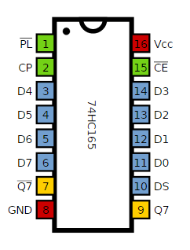
Código
Foram feitos dois sketchs para usar este circuito.
/*
Pinos usados:
D9 - Load Pin do 74HC165
D12 - Q7 Pin do 74HC165
D13 - CLOCK Pin do 74HC165
Sketch que usa a comunicação SPI.
*/
#include <SPI.h>
const byte LATCH = 9;
void setup() {
SPI.begin ();
Serial.begin(9600);
pinMode (LATCH, OUTPUT);
digitalWrite (LATCH, HIGH);
}
void loop() {
digitalWrite (LATCH, LOW);
digitalWrite (LATCH, HIGH);
byte optionSwitch = SPI.transfer(0);
Serial.print("12345678 : ");
for (byte i=0; i<8; i++) {
Serial.print((optionSwitch & (1<<i)) != 0 ? 1 : 0);
}
Serial.println();
delay(100);
}
// Sketch uses 2,892 bytes (8%) of program storage space. Maximum is 32,256 bytes.
// Global variables use 213 bytes (10%) of dynamic memory, leaving 1,835 bytes for local variables. Maximum is 2,048 bytes.
Outro sketch que usa o shiftIn e que pode usar outros pinos:
/*
Pinos usados:
D9 - Load Pin do 74HC165
D12 - Q7 Pin do 74HC165
D13 - CLOCK Pin do 74HC165
Sketch que usa o shiftIn.
*/
const byte LATCH = 9;
const byte DATA = 12;
const byte CLOCK = 13;
void setup() {
Serial.begin(9600);
pinMode(LATCH, OUTPUT);
pinMode(CLOCK, OUTPUT);
pinMode(DATA, INPUT);
digitalWrite(CLOCK, HIGH);
digitalWrite(LATCH, HIGH);
}
void loop() {
digitalWrite(CLOCK, HIGH);
digitalWrite(LATCH, LOW);
delayMicroseconds (5);
digitalWrite(LATCH, HIGH);
delayMicroseconds (5);
byte optionSwitch = shiftIn(DATA, CLOCK, MSBFIRST);
Serial.print("12345678 : ");
for (byte i=0; i<8; i++) {
Serial.print((optionSwitch & (1<<i)) != 0 ? 1 : 0);
}
Serial.println();
delay(100);
}
// Sketch uses 3,048 bytes (9%) of program storage space. Maximum is 32,256 bytes.
// Global variables use 212 bytes (10%) of dynamic memory, leaving 1,836 bytes for local variables. Maximum is 2,048 bytes.
Links úteis:
- Shift register hacks
- SN74HC165N
- Using a 74HC165 input shift register
- 74HC165 8 BIT PARALLEL IN/SERIAL OUT SHIFT REGISTER
Artigo do Maker ^
Projeto interessante publicado por um maker.
Estação Meteriologica com Bluetooth
O projecto de maker da semana foi feito pelo Matej Blagšič e encontra-se publicado no seguinte link.
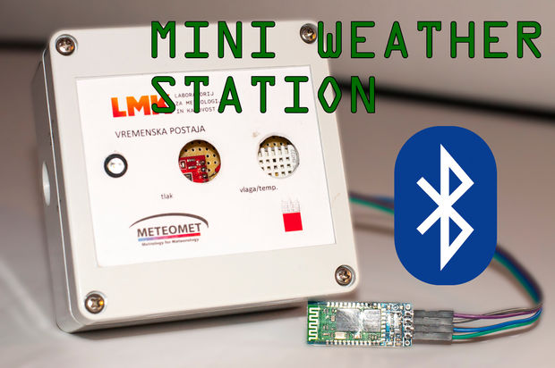
Trata-se de uma mini estação de meteorológica que comunica por Bluetooth.
Passo 1: Componentes
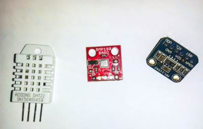
Para construir este projeto o maker usou os seguintes componentes:
- Seeeduino v4.0 ou Arduino Uno
- BMP180 - Sensor de temperatura e de pressão
- DHT22 - Sensor de temperatura e de humidade
- HC-06 - Modulo Bluetooth
- Caixa para o projeto - De exterior
Passo 2: O Seedduino V4
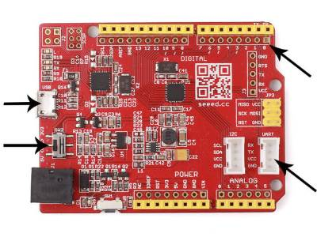
O maker escolheu esta placa compatível com o Arduino Uno pois a mesma tem a capacidade de comutar entre os 3.3V e os 5V. Isto é particularmente importante quando estamos a usar outras placas que também funcionam a 3.3V.
Passo 3: BMP180 - Sensor de temperatura e de pressão
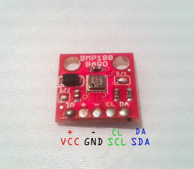
Este sensor usa a comunicação I2C e é 3.3V por isso não funciona diretamente com o Arduino UNO que usa uma tensão de 5V. A imagem acima mostras as ligações que a placa expõe.
Passo 4: DHT22 - Sensor de temperatura e de humidade
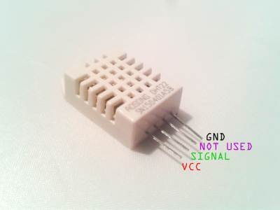
Este sensor funciona tanto a 3.3V como a 5V por isso podem ser usado com segurança com ambas as placas Seeduino e Arduino UNO.
Este sensor é bastante preciso e como tal os dados são medidos de 2 em 2 segundos.
Passo 5: Esquemático para ligar os componentes com o Seeduino ou outra placa com 3.3V de tensão
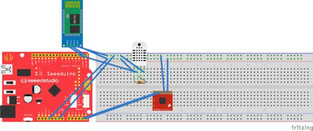
A imagem acima mostra todas as ligações que os sensores têm com a placa Seeduino. É bastante simples, o BMP180 liga à alimentação dos 3.3V e ao GND e também aos SCL (A5) e SCA (A4). O DHT22 precisa de uma resistência de pull-up entre o Vcc e o pino de dados. Foi usado o pino 2 do Seeduino.
O HC-06 foi ligado aos pinos de TX e RX do Seeduino.
Passo 5: Esquemático para ligar os componentes com o Arduino UNO ou outra placa com 5V de tensão
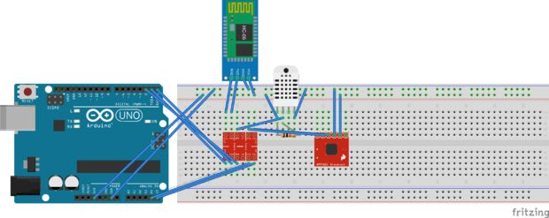
Para que se possa fazer estas ligações foi usado um componente adicional que é um level-shifter:
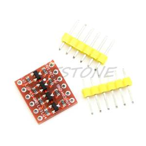 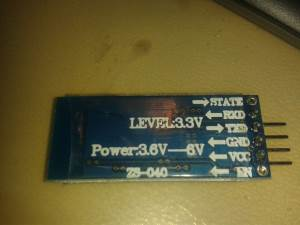
A imagem pode ser confusa mas funciona uma vez que o Uno pode debitar os 3.3V de tensão para efeitos de alimentação. O Level-shifter serve para a conversão dos sinais.
Todas linhas de comunicação incluindo o TX/RX, SCA/SCL e o dataPin 2 estão ligadas ao level-shifter do lado LV (Low Voltage) e estão por sua vez ligadas ao Arduino do lado HV (High Voltage).
Passo 7: O código
Para que o código funcione é necessário usar as seguintes bibliotecas:
No Android pode ser usada uma aplicação genérica de terminal Bluetooth como a Bluetooth Terminal
O código para o Arduino IDE:
float tempcorrection = 0; //temperature sensor correction(calibration) for
float tempcorrection2 = 0;//temperature sensor correction(calibration)
float humidcorrection = 0; //humidity sensor correction(calibration)
float presscorrection = 0;//pressure sensor correction(calibration)
#include <DHT.h> //library for DHT22
#include <SFE_BMP180.h> //library for bmp180
#include <Wire.h>
#define DHTPIN 2 //define the pin that the DHT22 sensor data line is connected to
#define DHTTYPE DHT22
#define ALTITUDE 308.0 //ENTER YOUR CURRENT ALTITUDE - find it on google maps
SFE_BMP180 pressure;
DHT dht(DHTPIN, DHTTYPE);
void setup() {
Serial.begin(9600);
Serial.println("Mesuring temperature, humidity and pressure with DHT22 in BMP180");
Serial.println("");
dht.begin();
// Initialize the sensor (it is important to get calibration values stored on the device).
if (pressure.begin()){
}
else
{ // Oops, something went wrong, this is usually a connection problem,
// see the comments at the top of this sketch for the proper connections.
Serial.println("BMP180 init fail\n\n");
while(1); // Pause forever.
}
}
void loop() {
Serial.println("BMP180");
Serial.println("");
BMP180();
delay(2000); //we will wait 2 second till the next sensor data appeares
Serial.println("");
Serial.println("DHT22");
Serial.println("");
dht22();
delay(5000); //we will be waiting 5 seconds till the next mesurement
Serial.println("---------------------------------------------------------------------------");
}
void dht22(){
float h = dht.readHumidity();
// Read temperature as Celsius (the default)
float t = dht.readTemperature();
// Read temperature as Fahrenheit (isFahrenheit = true)
float f = dht.readTemperature(true);
Serial.print("Humidity: ");
Serial.print(h + humidcorrection);
Serial.println(" %\t");
Serial.print("Temperature: ");
Serial.print(t + tempcorrection2);
Serial.println(" *C ");
Serial.println("");
}
void BMP180(){
char status;
double T,P,p0,a;
// Loop here getting pressure readings every 10 seconds.
// If you want sea-level-compensated pressure, as used in weather reports,
// you will need to know the altitude at which your measurements are taken.
// We're using a constant called ALTITUDE in this sketch:
// If you want to measure altitude, and not pressure, you will instead need
// to provide a known baseline pressure. This is shown at the end of the sketch.
// You must first get a temperature measurement to perform a pressure reading.
// Start a temperature measurement:
// If request is successful, the number of ms to wait is returned.
// If request is unsuccessful, 0 is returned.
status = pressure.startTemperature();
if (status != 0)
{
// Wait for the measurement to complete:
delay(status);
// Retrieve the completed temperature measurement:
// Note that the measurement is stored in the variable T.
// Function returns 1 if successful, 0 if failure.
status = pressure.getTemperature(T);
if (status != 0)
{
// Print out the measurement:
Serial.print("Temperature: ");
Serial.print(T + tempcorrection,2);
Serial.println(" deg C");
// Start a pressure measurement:
// The parameter is the oversampling setting, from 0 to 3 (highest res, longest wait).
// If request is successful, the number of ms to wait is returned.
// If request is unsuccessful, 0 is returned.
status = pressure.startPressure(3);
if (status != 0)
{
// Wait for the measurement to complete:
delay(status);
// Retrieve the completed pressure measurement:
// Note that the measurement is stored in the variable P.
// Note also that the function requires the previous temperature measurement (T).
// (If temperature is stable, you can do one temperature measurement for a number of pressure measurements.)
// Function returns 1 if successful, 0 if failure.
status = pressure.getPressure(P,T);
if (status != 0)
{
// Print out the measurement:
Serial.print("Absolute pressurre: ");
Serial.print(P + presscorrection,2);
Serial.println(" mb");
// The pressure sensor returns abolute pressure, which varies with altitude.
// To remove the effects of altitude, use the sealevel function and your current altitude.
// This number is commonly used in weather reports.
// Parameters: P = absolute pressure in mb, ALTITUDE = current altitude in m.
// Result: p0 = sea-level compensated pressure in mb
// On the other hand, if you want to determine your altitude from the pressure reading,
// use the altitude function along with a baseline pressure (sea-level or other).
// Parameters: P = absolute pressure in mb, p0 = baseline pressure in mb.
// Result: a = altitude in m.
p0 = pressure.sealevel(P,ALTITUDE); // we're at 1655 meters (Boulder, CO)
// Serial.print("relative (sea-level) pressure: ");
// Serial.print(p0,2);
// Serial.print(" mb, ");
// Serial.print(p0*0.0295333727,2);
// Serial.println(" inHg");
a = pressure.altitude(P,p0);
Serial.print("calculated altitude: ");
Serial.print(a,0);
Serial.println(" meters");
}
else Serial.println("error retrieving pressure measurement\n");
}
else Serial.println("error starting pressure measurement\n");
}
else Serial.println("error retrieving temperature measurement\n");
}
else Serial.println("error starting temperature measurement\n");
}
Outros artigos/projetos interessantes de ler:
- SAB3T - PID Loop Educational Tool
- DIY USB Line Power Meter Stick
- Homemade Mini Circular Saw DIY Power Supply by Laptop Battery
- 3D Compass
Compras ^
Artigos do ebay ou de outras lojas online que poderão ser úteis em projetos. A informação aqui presente apenas serve para ajudar na aquisição dos componentes. O altLab não tem qualquer intervenção/participação em qualquer negócio aqui apresentado.
5pcs 74hc165 sn74hc165n 8 bit parallel load shift registers dip-16
(http://www.ebay.co.uk/itm/121749349699) - £1.03
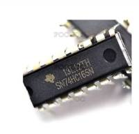
Product information:
- 100% Brand New.
- P/N: SN74HC165N.
- Supply Voltage Range:2V~6V.
- Output Current: 5.2mA.
- Package: DIP.
- 20 Pins.
Package Includes:
5pcs 74HC165 SN74HC165N 8 Bit Parallel Load Shift Registers DIP-16.
DHT22/AM2302 Digital Temperature and Humidity Sensor Replace SHT11
(http://www.ebay.co.uk/itm/301723583903) - £2.04
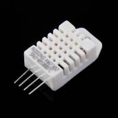
Feature:
- Brand new and high quality.
- Type:AM2302.
- Accuracy resolution:0.1.
- Humidity range:0-100%RH.
- Temperature range:-40~80C
- Humidity measurement precision:2%RH.
- Temperature measurement precision:0.5C
- 4-pin package.
- Ultra-low power.
- No additional components.
- Excellent long-term stability.
- All calibration, digital output.
- Completely interchangeable.
- Long distance signal transmission.
- Relative humidity and temperature measurement.
- Weight:3g
Package Included:
- 1 X AM2302 Temperature and Humidity Sensor
3.3V-5V 2 Channel Logic Level Converter TTL Bi-Directional Shifter Module
(http://www.ebay.co.uk/itm/252075020447) - £1.39
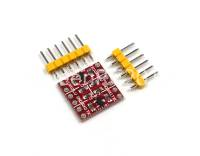
Description:
- 100% brand new
- Module Size: Approx. 1.5cm X 1.5cm
- Logic Level Converter, 3.3V 5V TTL level bidirectional transfers
- When MCU and 3.3 V device module is connected , 5 V and 3.3 V TTL level mutual transfer is very convenient
- Compatible with the bread plate, can be directly used and put on the bread board
Instruction manual:
The level converter is very easy to use. The board needs to be powered from the two voltages sources (high voltage and low voltage) that your system is using. High voltage (5V for example) to the ‘HV’ pin, low voltage (3.3V for example) to ‘LV’, and ground from the system to the ‘GND’ pin. The two power share one negative power supply.
Package including :
- 1x Logic Level Converter Bi-Directional Module
- 2x Connection Plugs
1PC BMP180 Digital Barometric Pressure Sensor Board Module For Arduino
(http://www.ebay.co.uk/itm/251820502885) - £1.07
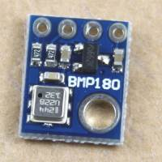
Description:
- 100% Brand new and high quality
- Quantity : 1pc
- Size: 21mm x 18mm
- 1.8V to 6V Supply Voltage
- Max I2C Speed: 3.5Mhz
- Low power consumption - 0.5uA at 1Hz
- I2C interface
- Very low noise - up to 0.02hPa (17cm)
- Full calibrated
- Pressure Range: 300hPa to 1100hPa (+9000m to -500m)
Package includes:
- 1PC X BMP180 Digital Barometric Pressure Sensor Board Module
HC-06 RS232 TTL Serial Wireless Bluetooth RF Transceiver Module for Arduino
(http://www.ebay.co.uk/itm/361336762724) - £2.51
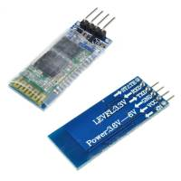
100% brand new and high quality HC-06 bluetooth RF transceiver module
- With VCC, GND, TXD, RXD foot for the bluetooth.
- With LED indicator light.
- 3.3V LDO baseboard.
- Input voltage 3.3 ~ 6V, the input voltage more than 7 V is prohibited.
- Unpaired current is about 30mA, matched current is about 10mA.
- Interface level 3.3 V, can be connected directly to a variety of single chip microcomputer (51, AVR, PIC, ARM, MSP430, etc.)
- 5V microcontroller can also be connected directly, without MAX232 nor through MAX232.
- Size: Approx. 3.57 x 1.52 cm
Package Included: 1 piece HC-06 bluetooth RF transceiver module
That's all Folks!